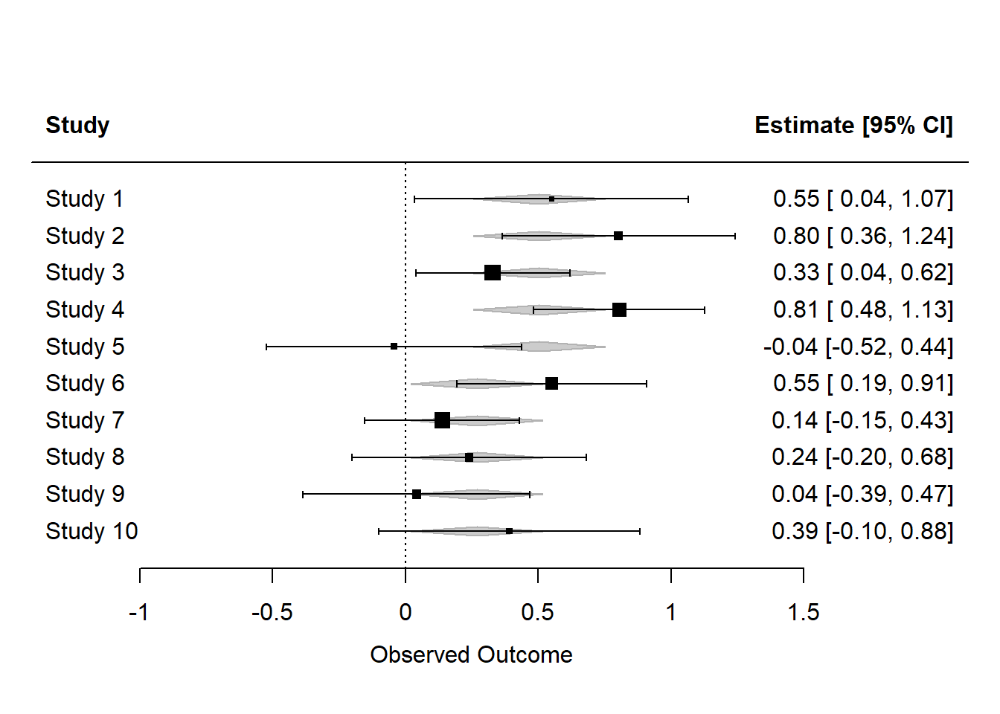
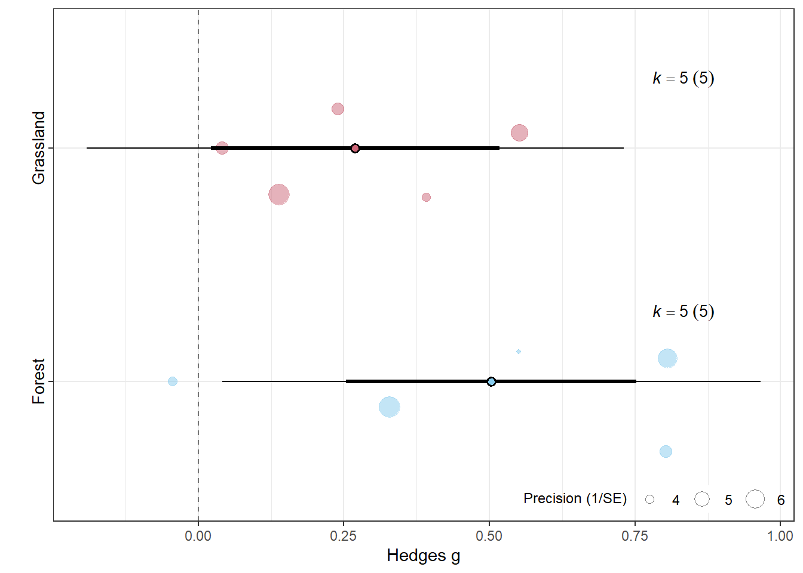
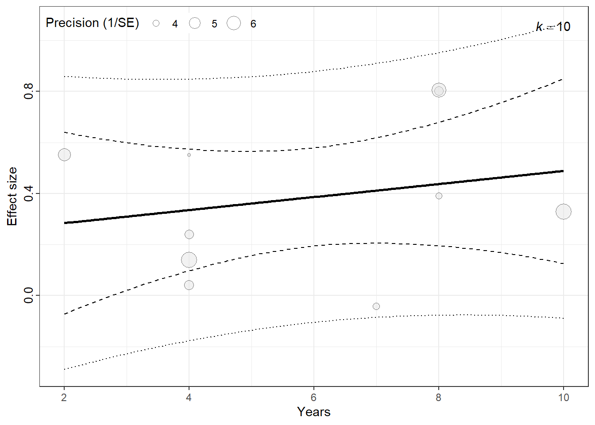

We simulate data from 10 ecological studies examining the effect of plant diversity on herbivore abundance. Each study provides a standardised mean difference (Hedges’ g), variance, and some study-level characteristics.
Concepts
Subgroup Analysis
This compares average effect sizes across categorical moderator groups (e.g. forest vs. grassland). It’s useful when you suspect that effects might differ by group.
Meta-Regression
This models the effect size as a function of one or more continuous (or categorical) moderators using linear regression, and allows testing of moderation across a gradient (e.g. study duration).
Simulated Study Data
library(metafor)library(orchaRd)# Simulated datasetset.seed(666) # for reproducibility dat <-data.frame(study_id =paste0("Study_", 1:10),yi =rnorm(10, mean =0.4, sd =0.2), # effect size (Hedges' g)vi =runif(10, 0.02, 0.07), # variance of effect sizehabitat =rep(c("Forest", "Grassland"), each =5),duration =sample(1:10, 10, replace =TRUE) # duration in years)dat
Is there evidence that study duration explains variability in effect sizes?
Interpret the slope coefficient.
Visualise the outcomes
forest(res_subgroup)

sub_model <- orchaRd::mod_results(res_subgroup, group ="study_id", mod ="habitat")orchaRd::orchard_plot(sub_model, xlab ="Hedges g")

reg_bubble <- orchaRd::mod_results(res_meta_reg, mod ="duration", group ="study_id")orchaRd::bubble_plot(reg_bubble, group ="study_id", mod ="duration", xlab ="Years", legend.pos ="top.left")

library(meta)
Loading 'meta' package (version 8.1-0).
Type 'help(meta)' for a brief overview.